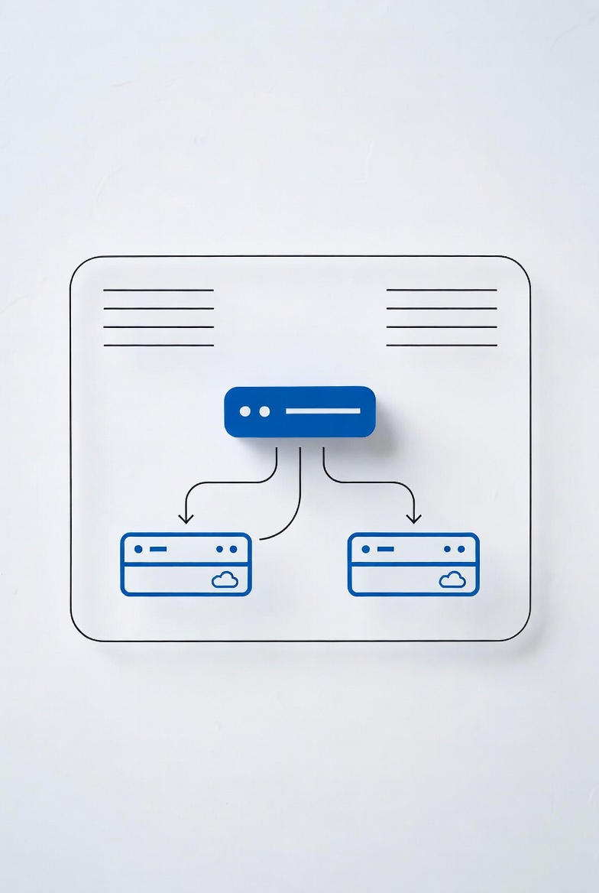

How to Set Up an Internal Load Balancer in Azure (Step-by-Step)

TL;DR
- Azure Internal Load Balancer (ILB) distributes traffic to VMs within your VNet
- Use NAT rules to access VMs via RDP/SSH without public IPs
- Health probes automatically remove failed instances from rotation
- Supports TCP/UDP for any internal application
Introduction
Azure Internal Load Balancer (ILB) routes traffic to workloads inside your virtual network. Unlike a public Load Balancer, the ILB is only accessible from within your VNet—making it perfect for:
- Internal applications and microservices
- Database high availability
- Secure RDP/SSH access to VMs without public IPs
- Application tiers that shouldn't be exposed to the internet
This guide walks you through setting up an Internal Load Balancer, configuring backend pools, health probes, NAT rules, and load balancing rules.
Prerequisites
- Azure subscription with contributor access
- Virtual network with at least one subnet
- Two or more VMs in the same VNet (for load balancing)
- Azure Portal access or Azure CLI
Architecture Overview
An Internal Load Balancer sits inside your VNet and distributes traffic to backend VMs:
- Frontend IP: Private IP address from your subnet
- Backend Pool: VMs that receive traffic
- Health Probes: Checks VM availability
- Load Balancing Rules: How traffic is distributed
- NAT Rules: Port forwarding (e.g., RDP to specific VMs)
Step 1: Create the Internal Load Balancer
- Go to Azure Portal → Search Load Balancer
- Click Create
- Fill in the basics:
- Resource Group: Select or create
- Name:
internal-lb - Region: Your preferred region
- Type: Internal
- SKU: Standard (recommended) or Basic
- Under Frontend IP configuration:
- Click "Add a frontend IP"
- Name:
frontend - Virtual Network: Select your VNet
- Subnet: Choose your subnet
- IP Address: Assign static (e.g.,
10.0.1.100)
- Click Review + create → Create
Step 2: Add Backend Pool
The backend pool defines which VMs receive traffic.
- Open your Load Balancer → Backend pools
- Click Add
- Name:
backend-pool - Virtual network: Select your VNet
- Under Virtual machines, click Add
- Select your VMs and their IP configurations
- Click Save
Step 3: Configure Health Probe
Health probes check if backend VMs are responding. Failed probes remove VMs from rotation.
- Go to Health probes → Add
- Configure:
- Name:
http-probe - Protocol: HTTP (or TCP for non-HTTP)
- Port:
80(or your application port) - Path:
/(for HTTP) - Interval:
5seconds - Unhealthy threshold:
2(consecutive failures before removal)
- Name:
- Click Save
Step 4: Create Load Balancing Rule
Load balancing rules define how traffic is distributed.
- Go to Load balancing rules → Add
- Configure:
- Name:
http-rule - Frontend IP: Select your frontend
- Backend pool: Select your backend pool
- Protocol: TCP or UDP
- Port:
80 - Backend port:
80 - Health probe: Select your probe
- Session persistence: None (or Client IP if needed)
- Idle timeout:
4minutes (default)
- Name:
- Click Save
Step 5: Configure NAT Rules (Optional)
NAT rules let you access individual VMs via the Load Balancer frontend IP—useful for RDP or SSH without public IPs.
- Go to Inbound NAT rules → Add
- For RDP access:
- Name:
rdp-vm1 - Frontend IP: Select your frontend
- Protocol: TCP
- Frontend port:
3389(or custom, e.g.,50001) - Target VM: Select VM1
- Target port:
3389
- Name:
- Click Save
- Repeat for additional VMs with different frontend ports
Connecting via NAT Rules
Instead of connecting to a public IP, connect to the Load Balancer frontend IP:
# RDP to VM1 via Load Balancer
mstsc /v:10.0.1.100:50001
# SSH to VM2 via Load Balancer
ssh admin@10.0.1.100 -p 50002Step 6: Verify and Test
- Check Insights in Load Balancer for traffic metrics
- Verify backend pool shows VMs as "Healthy"
- Test by connecting to the frontend IP or accessing your service
Troubleshooting
VM not receiving traffic?
- Check if NSG allows traffic to the backend port
- Verify health probe is passing (check VM firewall)
- Ensure VM is listening on the configured port
Health probe failing?
- Verify the probe port is open on the VM
- Check if firewall is blocking the probe
- Ensure the probe path returns 200 OK (for HTTP probes)
NAT rule not working?
- Confirm frontend port isn't already in use
- Check NSG on the VM allows inbound to the target port
- Verify the target VM is running
Azure CLI Alternative
Prefer command-line? Here's how to create the ILB:
# Create Internal Load Balancer
az network lb create \
--name internal-lb \
--resource-group my-rg \
--sku Standard \
--vnet-name my-vnet \
--subnet my-subnet \
--frontend-ip-name frontend \
--frontend-ip-address 10.0.1.100
# Add backend pool
az network lb address-pool create \
--lb-name internal-lb \
--name backend-pool \
--resource-group my-rg
# Add VMs to backend pool
az network lb address-pool address add \
--lb-name internal-lb \
--pool-name backend-pool \
--resource-group my-rg \
--vm vm1 \
--nic nic1
az network lb address-pool address add \
--lb-name internal-lb \
--pool-name backend-pool \
--resource-group my-rg \
--vm vm2 \
--nic nic2
# Create health probe
az network lb probe create \
--lb-name internal-lb \
--name http-probe \
--resource-group my-rg \
--protocol http \
--port 80 \
--path /
# Create load balancing rule
az network lb rule create \
--lb-name internal-lb \
--name http-rule \
--resource-group my-rg \
--frontend-ip-name frontend \
--backend-pool-name backend-pool \
--protocol tcp \
--frontend-port 80 \
--backend-port 80 \
--probe-name http-probeConclusion
Azure Internal Load Balancer provides secure, scalable traffic distribution for internal workloads. Key takeaways:
- ILB keeps traffic within your VNet—no public exposure
- NAT rules eliminate the need for public IPs on VMs
- Health probes ensure only healthy VMs receive traffic
- Standard SKU recommended for production (availability zone support)
Use this setup for internal applications, database HA, or secure admin access to your Azure VMs.
SEO Metadata
Meta Title: How to Set Up an Internal Load Balancer in Azure (Step-by-Step)
Meta Description: Complete guide to Azure Internal Load Balancer. Configure backend pools, health probes, NAT rules, and load balancing rules.
URL Slug: /tutorials/azure-internal-load-balancer
Internal Link Ideas
- Point-to-Site VPN for Remote Admins — Secure Azure access
- Create Secure Linux VM in Azure — VM hardening
- Azure NSG Best Practices — Network security
- Fix VPN Issues in Windows — Network troubleshooting
- Reset AD Passwords with PowerShell — Azure AD management